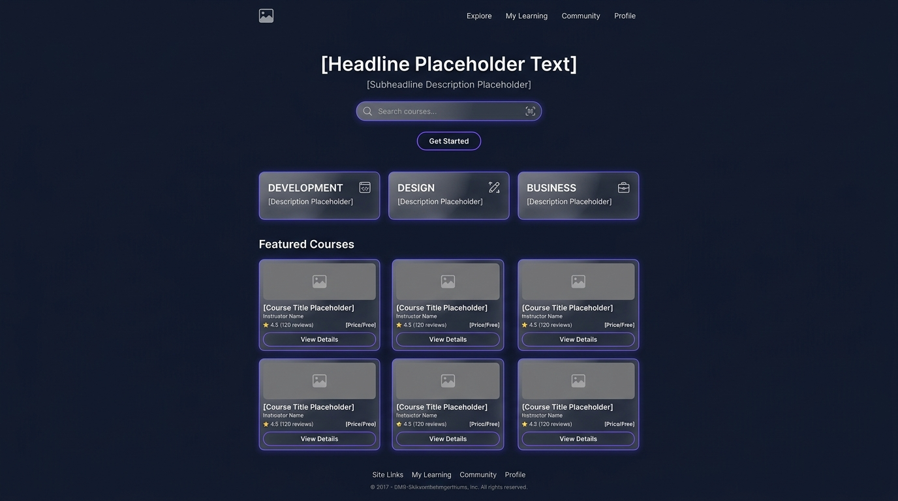
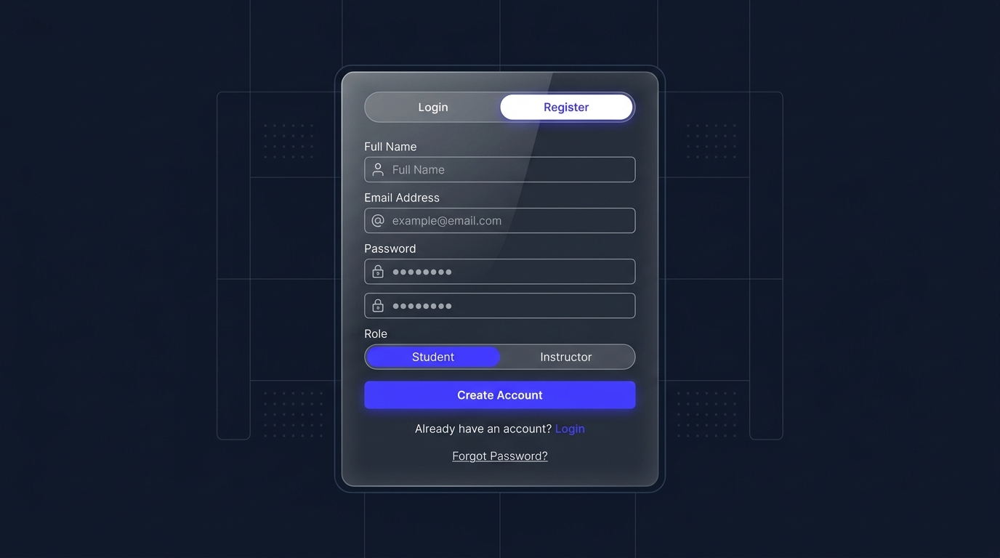
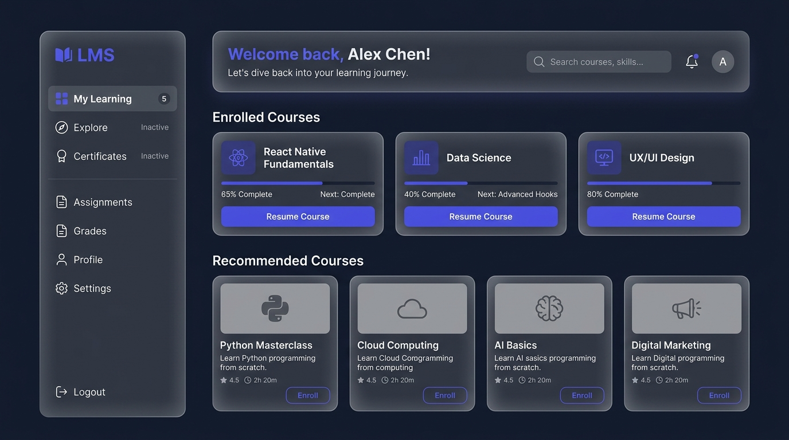
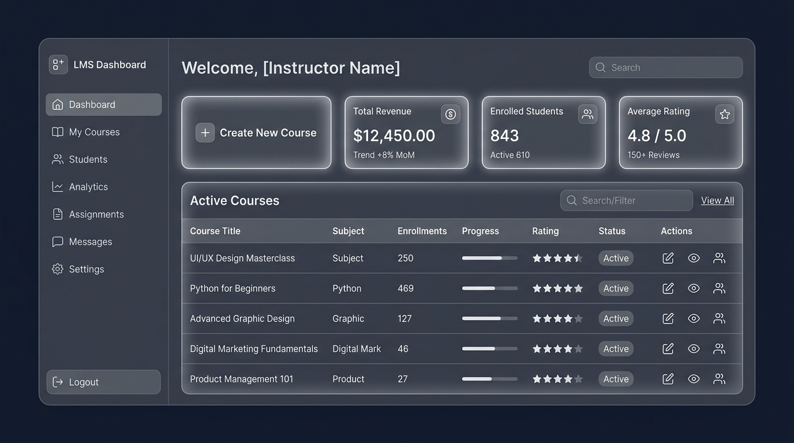
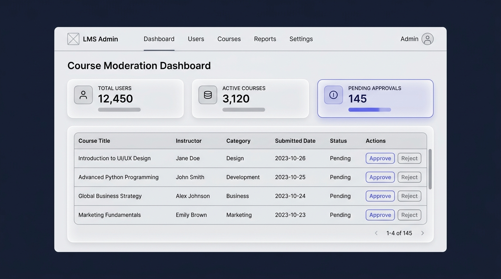

The Learning Management System (LMS) is a state-of-the-art, high-performance web application designed to support three distinct user roles: Students, Instructors, and Platform Administrators. The system provides a seamless learning console, a powerful course builder studio, and intuitive moderation utilities.
During Module 1, the project was successfully planned, specified, and bootstrapped. A modern, dark-themed, glassmorphic design system was established, and a feature-rich Next.js landing page was implemented using Tailwind CSS v4.
The core objectives of Day 1 focused on identifying user personas and determining the functional boundary of the LMS application. The target roles and their permission hierarchies are outlined below:
A premium Dark Mode Glassmorphic archetype was chosen, styled with:
#0F172A#6366F1rgba(30, 41, 59, 0.7) with a 12px backdrop blur filter and a subtle 1px solid rgba(255, 255, 255, 0.08) border.Functional specs were detailed using User Stories mapped with Gherkin (Given-When-Then) Acceptance Criteria. Below is the compiled matrix of core stories:
| Epic Area | ID | User Story (Summary) | Priority |
|---|---|---|---|
| Auth & Navigation | US-01 | Register accounts with role-based routing (Student vs Instructor) | High |
| Auth & Navigation | US-02 | Role-based header navigation options (Explore, Studio, Admin Queue) | High |
| Student Console | US-03 | Filterable, search-as-you-type course directory catalog | High |
| Student Console | US-04 | Detailed syllabus accordion and single-click course enrollment CTA | High |
| Student Console | US-05 | Interactive media console with sidebar curriculum navigation & auto-completion | Critical |
| Student Console | US-06 | Private notepad with video timestamps & Q&A thread board | Critical |
| Student Console | US-07 | Timed quiz manager with score cards and rationales | Medium |
| Student Console | US-08 | Printable glassmorphic completion certificates | Medium |
| Instructor Studio | US-09 | Multi-step course wizard (Info -> Curriculum -> Pricing -> Publish) | Critical |
| Instructor Studio | US-10 | Student gradebook table, grading action form, and feedback logs | Critical |
| Admin Board | US-11 | Moderation catalog queue with preview, approve, and reject comments | Medium |
# US-05: Learning Video Console
Scenario: Selecting a lesson from the curriculum panel
Given the student is on the Learning Console page (/learn/:courseId)
When they click on Lesson 3 in the curriculum sidebar
Then the central video player loads the Lesson 3 media file
And the lesson title updates in the header layout.
Scenario: Lesson playback completion triggers milestone
Given the video player is playing a course lesson
When the current playback runtime reaches 100% (ended)
Then the specific lesson list item shows a completed checkmark badge
And the overall progress bar increments automatically.Low-fidelity structural design wireframes were created to lock in the layout before writing code. Images of these wireframes are available in the repository.





In Day 4, the structural wireframe blueprints were finalized into high-fidelity component layouts. To prepare for application development, the visual style guide was mapped to concrete utility specifications:
backdrop-filter: blur(12px); background: rgba(30, 41, 59, 0.7); border: 1px solid rgba(255, 255, 255, 0.08);
box-shadow: 0 8px 32px 0 rgba(0, 0, 0, 0.37);
<768px).
Day 5 saw the migration from the temporary Vite template to a robust, search-engine-optimized Next.js 16 (App Router) skeleton using Tailwind CSS v4.
src/
├── app/
│ ├── favicon.ico
│ ├── layout.js # Shared HTML layout, Google Fonts integration
│ └── page.js # Premium dark glassmorphic landing page
├── components/ # Shared components (Navbar, CourseCard, GlassPanel)
├── context/ # AuthState, CourseState context providers
├── data/ # Mock course catalog data & analytics metrics
├── layout/ # Global dashboard wrappers
└── styles/ # Tailwind v4 globals & custom animation classes
The initial landing page code was written inside src/app/page.js, utilizing Tailwind v4 custom styles:
blur-[120px] to create a futuristic ambiance.
backdrop-blur-md and includes an expandable search bar, logo, and action CTAs.
The complete codebase is organized cleanly, fully committed, and hosted on GitHub.
To run the Next.js frontend app locally:
# 1. Clone repository
git clone https://github.com/ahsanadeem840-ai/Learning-Management-System-LMS-.git
cd Learning-Management-System-LMS-
# 2. Install dependencies
npm install
# 3. Launch Development Server
npm run dev
# 4. Access Local Deployment
# Open http://localhost:3000 in your browser.